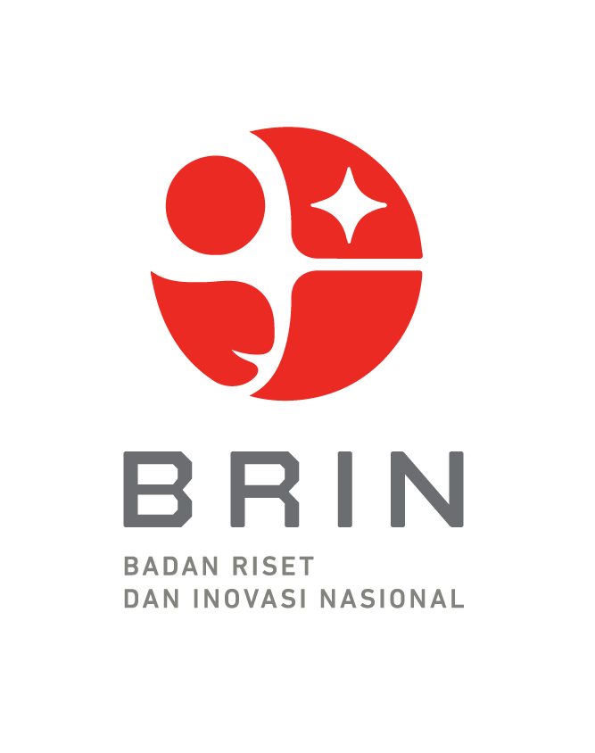
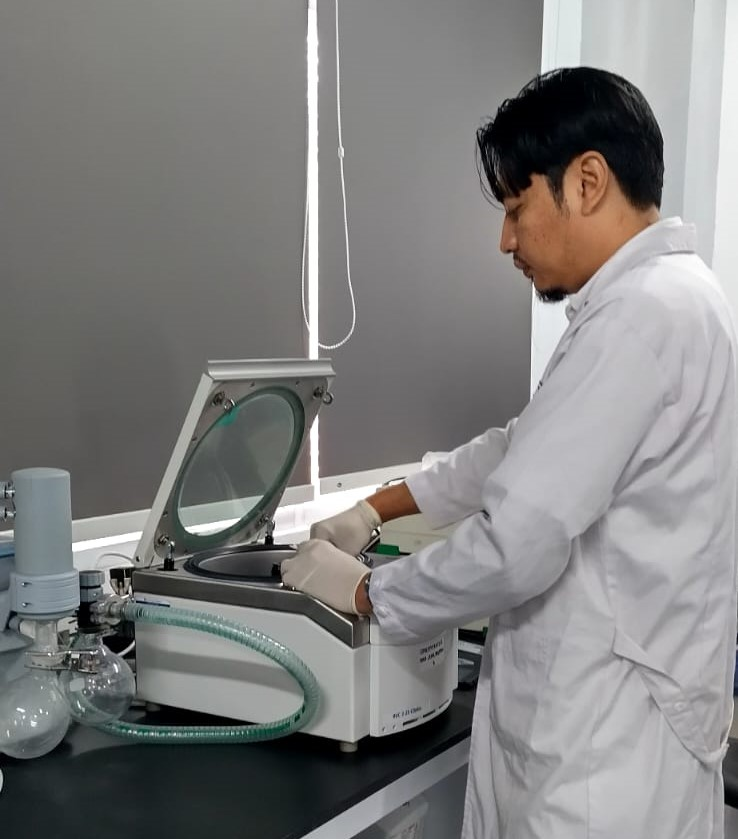
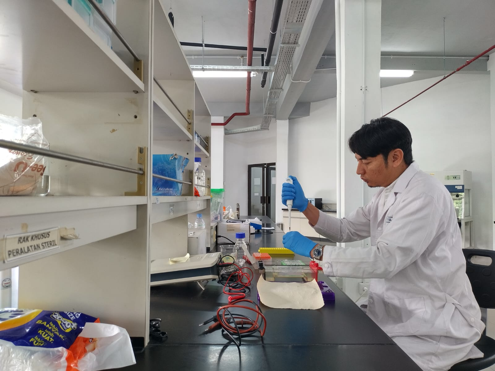
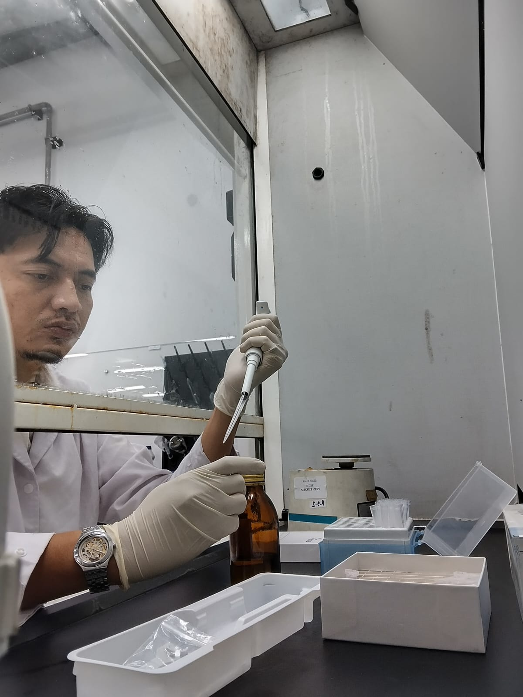
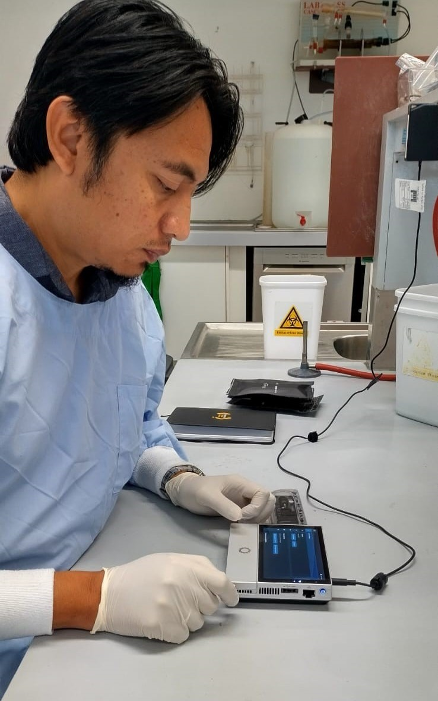
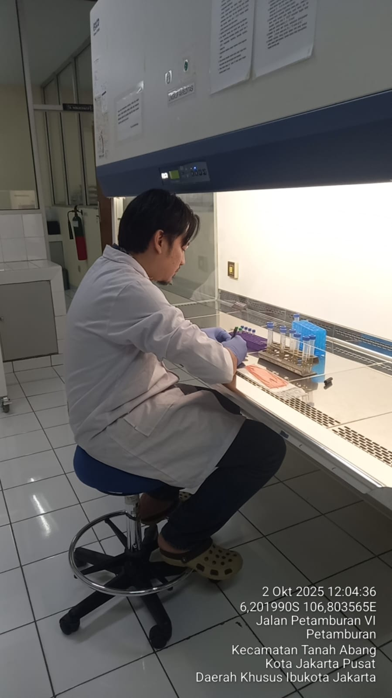
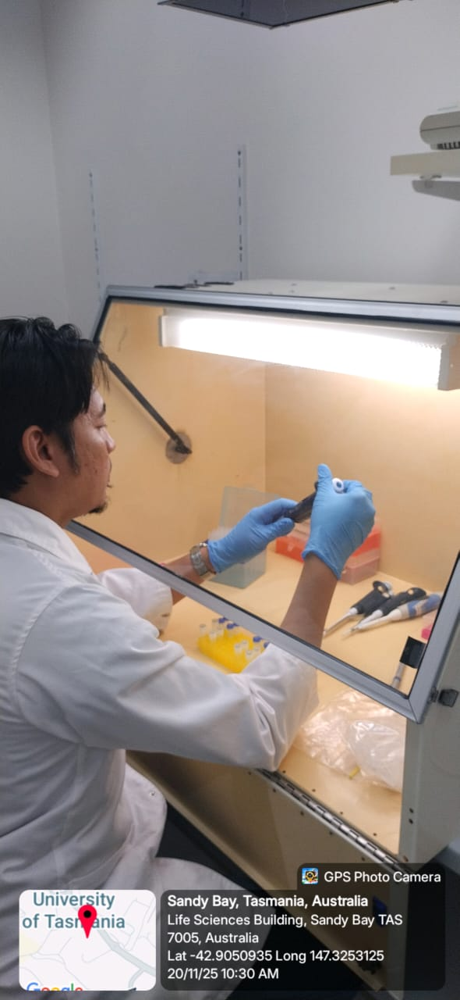
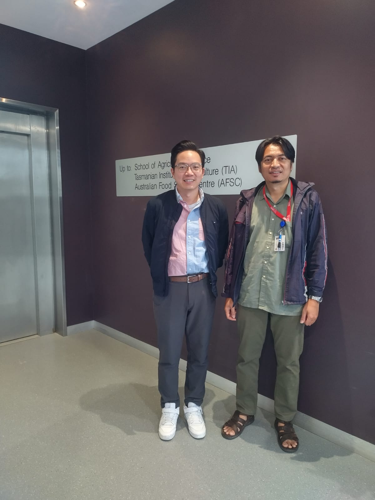
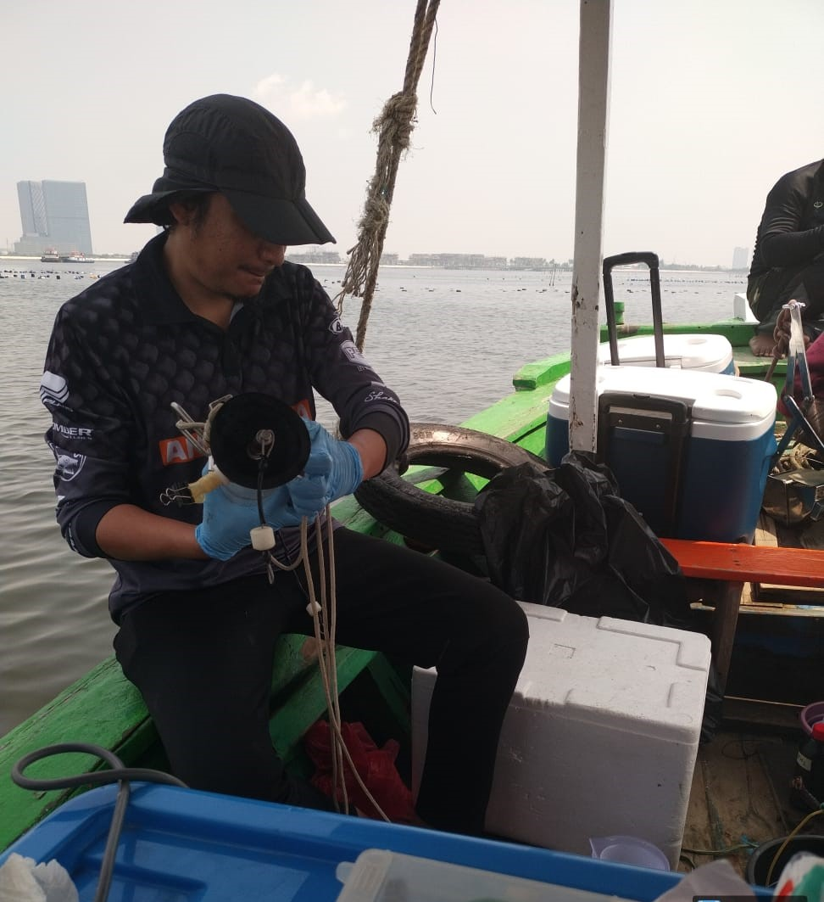

Researcher at the Research Center for Veterinary Science, National Research and Innovation Agency (BRIN), Indonesia. Driving research and innovation in marine/aquatic product food safety and public health through microbiological assay, molecular diagnostics, instrumentation analysis, microbial or chemical risk assessment, environmental biotechnology, and integrated One Health frameworks.
Development of a simultaneous detection method to support quantitative risk assessment of Antimicrobial Resistance (AMR) and antibiotic residues in aquaculture using a One Health approach.
Extensive study on the distribution and characterization of psychrophilic histamine-producing bacteria in tuna and tuna-like fish across Indonesian waters.
Multinational APEC project promoting bioplastic materials to reduce marine plastic litter in the Asia Pacific region, alongside isolating plastic-degrading microbes.
Creating a digital DNA barcode database mapping tropical fish biodiversity to develop advanced food product authentication and detection systems.
| Research Title | Year | Budget (IDR) | Funded By | Position |
|---|---|---|---|---|
| Development of simultaneous detection method for AMR & antibiotic residues | 2025 | 30 mil | BRIN | PI |
| Application of isotope technology for sources of formaldehyde in fishery products | 2025 | 72 mil | BRIN | Member |
| Distribution of psychrophilic histamine producing bacteria in tuna in Indonesia | 2025-27 | 350 mil | LPDP | PI |
| Development isotop-based assay for saxitotin quantification (Green Mussels) | 2024-26 | 250 mil | IAEA | Member |
| Natural Propionic Acid in Traditional Fish Fermentation Products | 2023 | 120 mil | LPDP | Member |
| Digital DNA Barcode Database for Seafood Authentication Systems | 2023 | 43 mil | BRIN | Member |
| Promoting bioplastic materials to reduce marine plastic litter | 2023 | 1,200 mil | APEC | Member |
| Risk profiling of pathogenic bacteria from tuna and tuna-like fish | 2021 | 201 mil | APBN-KKP | PI |
| Zoonotic fish parasite identification in imported fisheries products | 2020 | 250 mil | APBN-KKP | PI |
| Risk assessment of Norovirus in shellfish from Indonesian markets | 2015 | 800 mil | AUS AID-UTAS | PI |
Awarded by the Australian Government Department of Education and administered by RMIT University Asia Hub.
Awarded by the the Australian Government.
Awarded by the the Australia Awards Scholarship.
Supported by the Australia Awards Scholarship, Tasmania, Australia.
Organized by the National Agency of Drug and Food Control (BPOM RI), Jakarta, Indonesia.
Research Center for Marine and Fisheries Product Processing and Biotechnology, Jakarta, Indonesia.
SPICE III (Science for the Protection of Indonesian Coastal Marine Ecosystem), Bali, Indonesia — awarded by the Germany–Indonesia SPICE Project.
International Life Sciences Institute (ILSI) SEA Region, Singapore.
Business Innovation Center and the Indonesian Ministry of Research and Technology, Indonesia.
Business Innovation Center and the Indonesian Ministry of Research and Technology, Indonesia.







